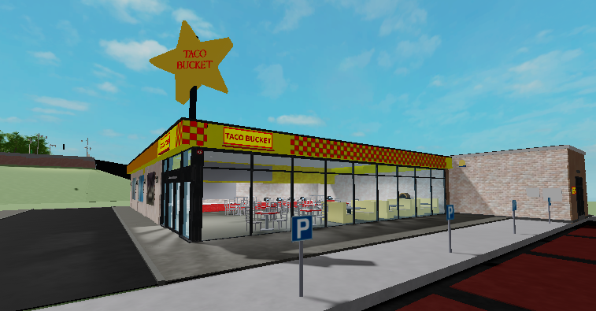
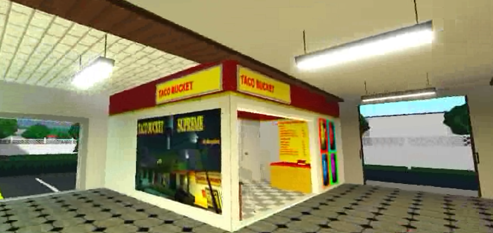

🌯 Our Story 🌯
TacoBucket's first appearance as a custom campaign in Left4Dead. Serving tacos since 2009!
TacoBucket first appeared as a custom campaign in Left4Dead and Left4Dead2 by custom map developer AlwaysToast. Due to positive reception, a successor, TacoBucket Supreme was born, larger than the original and fitted with a high quality juke box system with chart topping hits of the time such as Re: Your Brains by Jonathan Coulton and several other titles composed by the popular rock band Midnight Riders
Don't worry, this is only a practice website made as a joke, Brub didnt actually use this for a school assignment, all this jarring yellow and red colour and comic sans would have lead to an instant fail!!
@LightningFierceEditz | 2 years ago | I'll have extra large taco, extra veggies, extra hot sauce pls
虾仁猪心 | 2 Nov, 2024 @ 2:17am | Is this the creator's shop in the real world? I'll have two tacos, please, steamhappy
GlitchyUrkel | 6 Dec, 2023 @ 8:47am | this was such a good map :P
lil1th | 22 Oct, 2023 @ 4:34pm | Good map :steamthumbsup:
Appearance in Roblox

The first Roblox TacoBucket, opened in Twizel Town, 2023

After experiencing the magic of TacoBucket first hand, hshdfis(brub) wanted to bring the thrill of TacoBucket to Roblox. The first store, opening in the Kai Island in Twizel Town, sharing the same 4 item menu as the OG. The following year, brub saw potential expanding to Bloxburg, the menu was upgraded to cater the increased demand, including more side dishes, drinks and combos for extra convinience. Today, TacoBucket is a large fast food chain that can be found in many foodcourts in shopping malls, aswell as various plots in bloxburg, and some other special branches. To see all of our restaurants, checkout the "Locations" page on the website header!The first TacoBucket to open in Bloxburg, PineView Mall 2024
Online launch
In 2025 a website is made for TacoBucket which is this one! Brub needed to make a website to test his HTML skills for school, and what better way to do it than here!Don't worry, this is only a practice website made as a joke, Brub didnt actually use this for a school assignment, all this jarring yellow and red colour and comic sans would have lead to an instant fail!!
(genuine) Reviews from our loyal customers in the community! (real and not staged, sources included)
@ArcErebus | 2 months ago | You know it's gonna be good when it says bucket@LightningFierceEditz | 2 years ago | I'll have extra large taco, extra veggies, extra hot sauce pls
虾仁猪心 | 2 Nov, 2024 @ 2:17am | Is this the creator's shop in the real world? I'll have two tacos, please, steamhappy
GlitchyUrkel | 6 Dec, 2023 @ 8:47am | this was such a good map :P
lil1th | 22 Oct, 2023 @ 4:34pm | Good map :steamthumbsup: